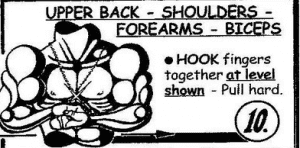

< < < Back
Are Isometric Exercises Worth Doing? – Return Of Kings
As I alluded to in a previous article, I have suffered an injury to my foot that necessitates a cast, but I have continued writing articles and even decided to come up with a few pertinent to those in similar conditions.
What Are Isometric Exercises?
Isometric exercise is defined as any exercise in which the muscle and joint contract and “flex,” but do not extend—a static position, in other words. These can be done by resisting against any immovable force, such as a wall, a standard weight, or even one’s own body.
While in an ideal situation, I feel that having a full and natural path of motion will provide a superior workout, which is incidentally why free weights will always be superior to machines. Isometrics can still be a nice supplemental workout, as advocated by many of the earliest proponents of modern physical culture such as Monte Saldo and Eugen Sandow—as well as one of the few options for exercise available to those in restrictive situations. I myself have started to utilize isometrics while I am temporarily incapable of walking.
My Isometric Routine
The routine that I started with, and still largely use (doing it twice a week as I would have done with standard resistance training) is taken from the “Black Monk” set of isometrics, which are claimed to have been invented by a group of Buddhist monks imprisoned in highly constricted conditions before ultimately escaping via applying nerve pressure to the guards outside (this printed set of isometrics is also where the pictures are taken from).
While I personally doubt this comic book-esque origin story, I do find that these exercises are fairly rigorous, and have reduced the amount of muscular atrophy that I have had in the month-plus of inactivity I have been through, and likely will continue to do so in the coming months ahead. This article will deal with the upper body isometric exercises.
The first isometric exercise I do is one I have previously discussed in my article on abdominal exercise: the abdomen vacuum. To do this exercise, stand up as straight as you can. In my case, I put my knee up on a chair-place the hands on your hips. Take a deep breath while simultaneously “sucking in” the abdominal muscles—imagine that you are trying to touch your bellybutton to your spine.
Then exhale while simultaneously continuing to suck in your abdomen, Once you have completely breathed out, relax.

The first black monk isometric is to place the hands together in the prayer position at chest level. Take a deep breath and push the hands together hard, exhaling as you apply pressure (this method of breathing is done for all isometrics). Your arms should visibly be shaking. Do a couple of sets of these, making sure to catch your breath before the next set, and move on.
Next, lock fingers as shown and attempt to pull apart, do a few sets of these and move on. The actual document recommends four sets for adult men for all exercises, but I would start with one or two.

The next pose is the famous chest pose used by bodybuilders. Place on arm at the side, and bend 90 degrees at the elbow. Bring the other arm around and clasp hands—one palm should be facing up, one should be facing down. Inhale and apply conflicting pressure while exhaling. Then switch sides. Whether or not you want to do two sets or four sets for each side is a decision best left up to the individual.
Moving the arms down to waist level, make one hand into a fist, and clasp it in the other hand, exhaling and pressing as hard as possible. Then switch hands and repeat.
Bring the hands back up to chest level, make two fists, and put one fist on top of the other. Push the top fist down and the bottom fist up, keeping the two fists between the pectoral muscles and the bellybutton, then switch.
Bringing the hands back to the belly button, place one palm facing out and clasp it with the other hand, then push away/towards the torso.
The back receives its first workout with this exercise—place the arms behind the back and have them laying next to each other as pictured. Then push forward with both arms.
The hands and forearms are worked with the last two exercises: The first consists of grabbing each forearm with the opposite hand and squeezing very hard.
The second consists of the fingers being interlaced, and having the hands rotate in opposite directions. Then switch the directions the hands are rotating in.
Conclusion
While I admit I am not sure how effective these exercises are in comparison to standard resistance training (I would wager the latter is more effective), I can personally vouch for isometrics being useful in maintaining musculature and preventing atrophy when regular methods of exercise are not available. Isometrics are useful to learn should you find yourself inconvenienced, and as a supplemental exercise as well. Try for yourself!
Read More: 3 Ab Exercises Every Man Must Know